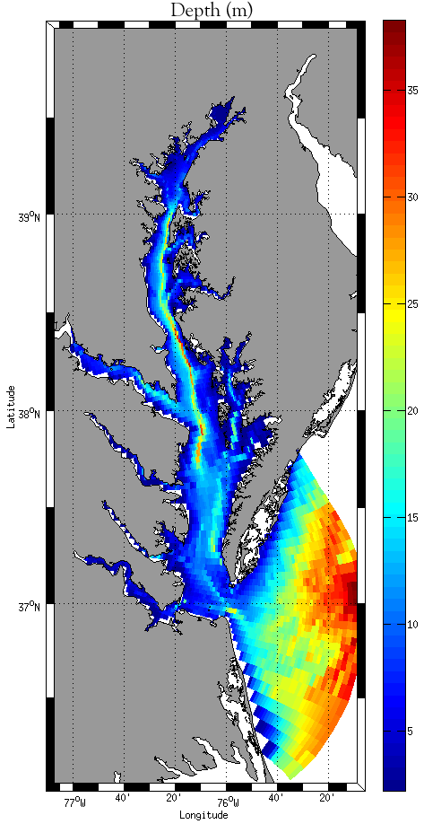
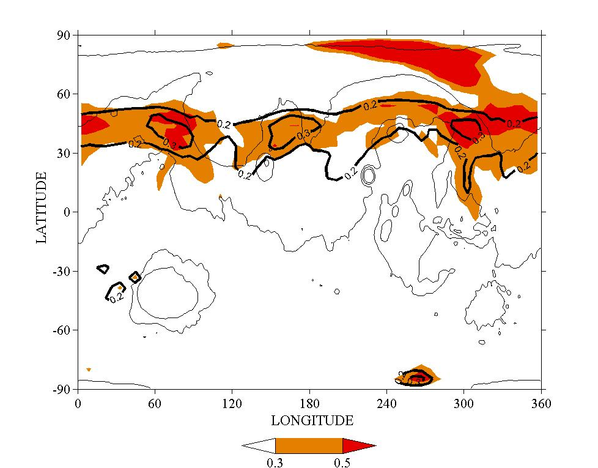
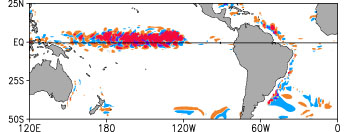
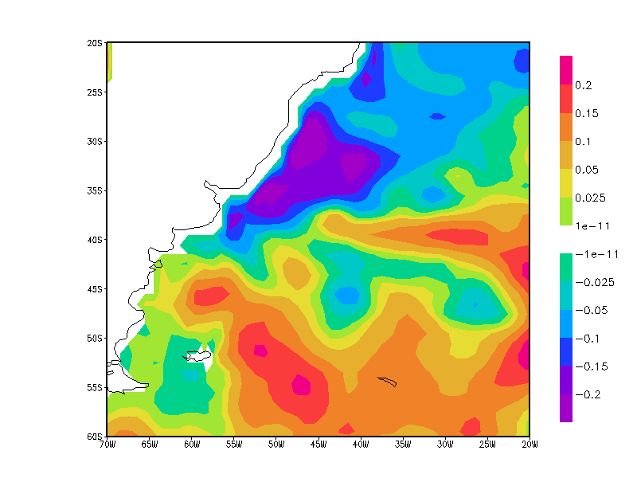

Curriculum Vitae (pdf)
Research Statement (pdf)
Publications:
Hoffman, M. J., T. Miyoshi, T. Haine, K. Ide, C. W. Brown, and R. Murtugudde. 2012. An Advanced Data Assimilation System for the Chesapeake Bay: Performance Evaluation. J. Atmos. Oceanic Tech. In press. pdf
Greybush, S.J., E. Kalnay, M.J. Hoffman, R.J. Wilson. 2012. Identifying Martian atmospheric instabilities and their physical origins using bred vectors. Quart. J. R. Met. Soc., In press.
Urquhart, E, M.J. Hoffman, B.F. Zaitchik, S. Guikema, and E.F. Geiger. 2012. Remotely sensed estimates of surface salinity in the Chesapeake Bay: A statistical approach. Remote Sensing of the Environment, 123, 522-531, DOI: 10.1016/j.rse.2012.04.008. link
Hoffman, M.J., J. Eluszkeiwicz, D. Weisenstein, G. Uymin, and J.-L. Moncet. 2012. A Critical Assessment of Mars Atmospheric Temperature Retrievals from the Thermal Emission Spectrometer Measurements. Icarus, In press.
Vodacek, A., J. P. Kerekes, M.J. Hoffman. 2012. Adaptive optical sensing in an object tracking DDDAS. Procedia Computer Science, 9, 1159-1166, DOI: 10.1016/j.procs.2012.04.125. link
Hoffman, M. J., S .J. Greybush, R. J. Wilson, G. Gyarmati, R. N. Hoffman, E. Kalnay, K. Ide, E. Kostelich, T. Miyoshi, and I. Szunyogh. 2010. An ensemble Kalman filter data assimilation system for the Martian atmosphere: Implementation and simulation experiments. Icarus, 209, 470-481, DOI: 10.1016/j.icarus.2010.03.034. pdf
Hoffman, M. J., E. Kalnay, J. A. Carton, and S.-C. Yang. 2009. Use of breeding to detect and explain instabilities in the global ocean. Geophys. Res. Lett., 36, L12608, DOI:10.1029/2009GL037729. pdf
Hoffman, M. J. 2009. Ensemble Data Assimilation and Breeding in the Ocean, Chesapeake Bay, and Mars. Ph.D. Dissertation. pdf
Gibbons, K. S., M. J. Hoffman, and W. K. Wootters. 2004. Discrete Phase Space Based On Finite Fields. Phys. Rev. A, 70, 062101. abstract, pdf, ps
Research Projects:
Advanced Assimilation in the Chesapeake Bay
|
 I am currently working on implementing the Local Ensemble Transform Kalman Filter (LETKF) on a ROMS model of the Chesapeake Bay. The LETKF is an advanced method for data assimilation and was developed by the Weather and Chaos group at the University of Maryland, College Park. I am applying it to the ChesROMS model, which is being developed by scientists at NOAA, University of Maryland, CRC (Chesapeake Research Consortium) and MD DNR (Maryland Department of Natural Resources). This research began during my dissertation at the University of Maryland and was advised directly by Raghu Murtugudde and Christopher W. Brown. Identical twin experiments have shown that the LETKF quickly reduces the analysis error, even with a very sparse data set. In addition, the ensemble spread has been utilized to explore the seasonal variability of the Chesapeake Bay and to advise new observation locations. The H-operator (observation operator) for the Bay was developed so that observation could be assimilated in real locations. I am continuing this work as part of my postdoc at Johns Hopkins along with Tom Haine and Darryn Waugh. We are currently exploring the impact of forcing errors on the assimilation and ways to correct these errors using the assimilation. We have also begun work with assimilating real satelite and in situ data. We are also working with other scientists to derive salinity information from satellite temperature and ocean color measurements and assimilate these as well. |
Mars Data Assimilation and Climate Reanalysis
|
In addition to the coastal ocean domain, I am working on ensemble data assimilation of the Martian atmosphere. This is part of a NASA grant and involves people from the University of Maryland, GFDL, and AER Inc. I have interfaced the LETKF with John Wilson's NASA/NOAA Mars GCM to improve prediction of the Martian weather and our understanding of the Martian climate. Initial studies have been run using simulated observations in a perfect model framework and have confirmed the viability of the LETKF for the assimilation of satellite observations from the Thermal Emission Spectrograph (TES) on the Mars Global Surveyor (MGS). Ongoing work is in assimilating real observations from the TES mission. Details of the initial results can be found in my dissertation and a paper on the first stage of the work was published in Icarus. As part of this reseach I am currently working on coding the assimilation of radiance information and also in testing the Optimal Spectral Sampling (OSS) radiative tranfer model that we plan on using. The OSS model was developed at AER in Lexington, MA and I am collaborating with a few researchers there. |
Breeding Energy Equations and Tropical Instability Wave Analysis
|
My research has also included developing energy equations for the breeding method. Breeding allows us to identify instabilities in the ocean and the shapes of prediction errors, among other things. The breeding energy equations allow the diagnosis of the type of energy conversion that takes place. Using the Modular Ocean Model (MOM), originally created by the Geophysical Fluid Dynamics Laboratory (GFDL), and modifying it to run breeding experiments, we have applied the energy equations to the study of Pacific Tropical Instability Waves. My advisors for this project are James Carton and Eugenia Kalnay. Results have been presented at a number of conferences (see below) and a publication on the research was published in GRL in 2009. In addition, this method is now being applied to the Martian atmosphere to identify and diagnose instabilities. I have been assisting in an effort led by Steven J. Greybush at the University of Maryland, College Park, which will be a portion of his Ph.D. dissertation. A first paper on this topic is currently being written. |
Ocean Data Assimilation at CPTEC/INPE
|
In addition, I am part of a collaborative effort between CPTEC/INPE in Brazil and the University of Maryland to develop an operational global oceanic data assimilation using the LETKF and the MOM4 ocean model. The first phase of the project was completed in May 2008 and involved interfacing the LETKF with the MOM4 model. The MOM4 setup used has 1°x1° horizontal resolution with 50 vertical levels and is coupled to an ice model. Assimilating temperature, salinity, and current observations in identical twin experiments have shown a quick and asymptotic reduction on both analysis errors and the errors of the subsequent forecasts. Results from the first phase of this project were presented at the Brazilian Meteorological Congress and a short paper appeared in the conference proceedings. The second part of the research involved applying the LETKF to a regional model of the Southern Atlantic Ocean. |
Conference Presentations:
4th International Mars Workshop—February 8, 2011—Paris, France
Assimilating satellite and in situ data into a Chesapeake Bay model using the LETKF
American Meteorological Soc. Annual Meeting—January 26, 2011—Seattle, WA
(click here for the recorded presentation from AMS)
Ensemble Kalman Filter Data Assimilation of TES Retrievals
Division of Planetary Sciences Annual Meeting—October 7, 2010—Pasadena, CA
Martian Atmospheric Data Assimilation Using an Ensemble Kalman Filter
American Meteorological Soc. Annual Meeting—January 19, 2010—Atlanta, GA
Ensemble Kalman Filter Data Assimilation for the Martian Atmosphere
Division of Planetary Sciences Annual Meeting—October 8, 2009—Fajardo, PR
University of Maryland, College Park—May 15, 2009—College Park, MD
The Explanation of Ocean Instabilities Using Breeding
CEAFM/Burgers Symposium at Johns Hopkins—May 1, 2009—Baltimore, MD
Effects of Observational Data on an Advanced Data Assimilation System
Chesapeake Modeling Symposium—May 13, 2008—Annapolis, MD
Ocean Data Assimilation Using an Ensemble Kalman Filter
University of São Paulo—April 25, 2008—São Paulo, Brasil
Center for Weather Forecasts and Climate Studies (CPTEC)—April 3, 2008—Cachoeira Paulista, Brasil
National Institute of Space Research (INPE)—March 25, 2008—São Jose dos Campos, Brasil
Ocean Instabilities Captured by Breeding on a Global Ocean Model
International Union of Geodesy and Geophysics Meeting 2007—July 12, 2007—Perugia, Italy
Posters:
An Advanced Data Assimilation System for Estuary and Coastal Ocean Prediction
AGU Fall Meeting—December 19, 2008—San Francisco, CA
Ocean Instabilities Captured by Breeding on a Global Ocean Model
American Meteorological Soc. Annual Meeting—January 18, 2007—San Antonio, TX
Ocean Instabilities Captured by Breeding on a Global Ocean Model
AGU Fall Meeting—December 11, 2006—San Francisco, CA